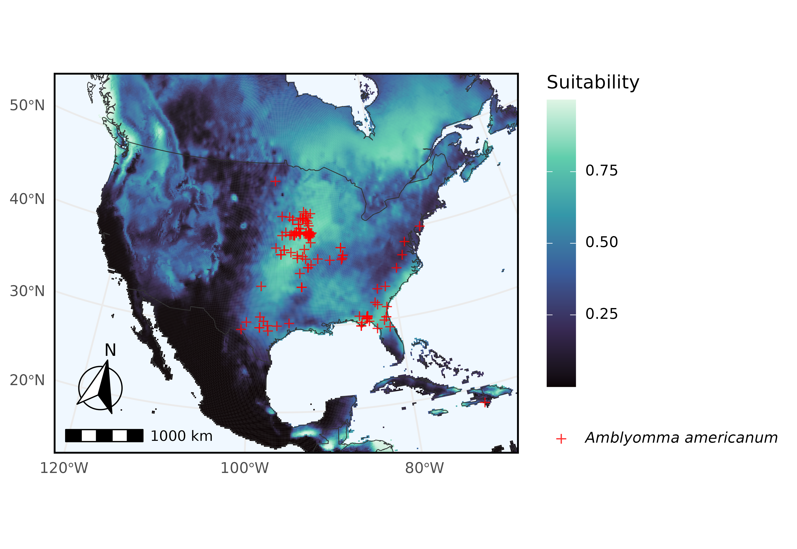

In this example we query Arctos for records of Amblyomma americanum (the turkey tick) and use their geographical coordinate data as input for ecological niche modeling via kuenm2. This vignette closely follows the usage example from https://github.com/marlonecobos/kuenm but uses data downloaded directly from Arctos via ArctosR.
# Install packages if needed
# install.packages("ArctosR")
# install.packages("geodata")
# install.packages("ggplot2")
# install.packages("ggspatial")
# install.packages("ggtext")
# install.packages("kuenm2")
# install.packages("maps")
# install.packages("terra")
# Load packagess
library(ArctosR)
library(geodata)
#> Loading required package: terra
#> terra 1.9.11
library(ggplot2)
library(ggspatial)
library(ggtext)
library(kuenm2)
#>
#> Attaching package: 'kuenm2'
#> The following object is masked from 'package:ggplot2':
#>
#> remove_missing
library(maps)
library(terra)Querying Arctos for occurrence records
First, we query Arctos for turkey tick records using
get_records(), requesting only the GUID identifier, decimal
latitude, and longitude columns for each specimen.
# Download all available records of Amblyomma americanum, and include latitude
# and longitude data
turkey_tick_query <- get_records(
scientific_name = "Amblyomma americanum",
columns = list("guid", "dec_lat", "dec_long"),
api_key = YOUR_API_KEY,
all_records = TRUE
)Filtering and cleaning data for kuenm2
Next, we filter the Arctos data to specimens collected just in North
America, and relabel the columns dec_lat and
dec_long to latitude and
longitude as those names are what the kuenm2 package
expects.
# Limits on latitude and longitude for the Arctos data and for climate data
latitude_north_lim <- 60
latitude_south_lim <- 10
longitude_east_lim <- -50
longitude_west_lim <- -130
# Get response data.frame from ArctosR
occurrences_raw <- response_data(turkey_tick_query)
# Relabel columns
occurrences <- data.frame(
species = "Amblyomma americanum",
longitude = as.numeric(occurrences_raw$dec_long),
latitude = as.numeric(occurrences_raw$dec_lat)
)
# Filter to known geographic range of the species
filter <- occurrences$longitude > longitude_west_lim &
occurrences$latitude < latitude_north_lim |
is.na(occurrences$longitude) |
is.na(occurrences$latitude)
occurrences_filter <- occurrences[filter, ]Downloading environmental data
Next, we use the geodata package to download climate data from WorldClim, which will form part of the input into the models we are going to train. It will save these data as files, so we pass it our current working directory as the path to save those files to.
# Get working directory
project_root <- getwd()
# Get environmental data
biovars <- worldclim_global(var = "bio", res = 10, path = project_root)Similarly we filter the WorldClim data to only coordinates in North America.
# Mask environmental layers to an area relevant for records and predictions
# Transform occurrences into spatial points
occ_geo_points <- vect(occurrences_filter, geom = c("longitude", "latitude"),
crs = crs(biovars))
# Buffer records
occ_buffer <- buffer(occ_geo_points, width = 100000)
# Mask layers with buffer
biovar_mask <- crop(biovars[[c(1, 7, 12, 15)]], occ_buffer, mask = TRUE)
# Mask layers to an extent within North America
biovar_na <- crop(biovars[[c(1, 7, 12, 15)]], ext(longitude_west_lim, longitude_east_lim, latitude_south_lim, latitude_north_lim))Cleaning data and performing model selection with kuenm2
Now, we use kuenm2’s built-in data cleaning functions to prepare the data for ecological niche modeling.
# Basic data cleaning (remove duplicates, no data, (0,0) coordinates)
occ_clean1 <- initial_cleaning(
data = occurrences_filter,
species = "species",
x = "longitude",
y = "latitude",
remove_na = TRUE,
remove_empty = TRUE,
remove_duplicates = TRUE
)
# Remove duplicates based on layer pixel
occ_clean2 <- remove_cell_duplicates(
data = occ_clean1,
x = "longitude",
y = "latitude",
raster_layer = biovar_mask[[1]]
)
nrow(occ_clean2)
#> [1] 96
# Prepare data for models
d <- prepare_data(
algorithm = "maxnet",
occ = occ_clean2,
x = "longitude",
y = "latitude",
raster_variables = biovar_mask,
species = "Amblyomma americanum",
partition_method = "kfolds",
n_partitions = 4,
n_background = 1000,
features = c("lq", "lqp"),
r_multiplier = c(0.1, 1, 2)
)Now we use the cleaned data to perform model selection and finally return a prediction from our best fitting models.
# Run model selection
cal <- calibration(
data = d,
error_considered = 5,
omission_rate = 5
)
#> Task 1/1: fitting and evaluating models:
#> | | | 0% | |= | 2% | |== | 3% | |=== | 5% | |==== | 6% | |===== | 8% | |====== | 9% | |======= | 11% | |======== | 12% | |========== | 14% | |=========== | 15% | |============ | 17% | |============= | 18% | |============== | 20% | |=============== | 21% | |================ | 23% | |================= | 24% | |================== | 26% | |=================== | 27% | |==================== | 29% | |===================== | 30% | |====================== | 32% | |======================= | 33% | |======================== | 35% | |========================= | 36% | |=========================== | 38% | |============================ | 39% | |============================= | 41% | |============================== | 42% | |=============================== | 44% | |================================ | 45% | |================================= | 47% | |================================== | 48% | |=================================== | 50% | |==================================== | 52% | |===================================== | 53% | |====================================== | 55% | |======================================= | 56% | |======================================== | 58% | |========================================= | 59% | |========================================== | 61% | |=========================================== | 62% | |============================================= | 64% | |============================================== | 65% | |=============================================== | 67% | |================================================ | 68% | |================================================= | 70% | |================================================== | 71% | |=================================================== | 73% | |==================================================== | 74% | |===================================================== | 76% | |====================================================== | 77% | |======================================================= | 79% | |======================================================== | 80% | |========================================================= | 82% | |========================================================== | 83% | |=========================================================== | 85% | |============================================================ | 86% | |============================================================== | 88% | |=============================================================== | 89% | |================================================================ | 91% | |================================================================= | 92% | |================================================================== | 94% | |=================================================================== | 95% | |==================================================================== | 97% | |===================================================================== | 98% | |======================================================================| 100%
#>
#>
#> Model selection step:
#> Selecting best among 66 models.
#> Calculating pROC...
#>
#> Filtering 66 models.
#> Removing 0 model(s) because they failed to fit.
#> 21 model(s) were selected with omission rate below 5%.
#> Selecting 4 final model(s) with delta AIC <2.
#> Validating pROC of selected models...
#> | | | 0% | |================== | 25% | |=================================== | 50% | |==================================================== | 75% | |======================================================================| 100%
#>
#> All selected models have significant pROC values.
# Fit selected models
mfit <- fit_selected(calibration_results = cal)
#>
#> Fitting full models...
#> | | | 0% | |================== | 25% | |=================================== | 50% | |==================================================== | 75% | |======================================================================| 100%
# Predict to part of North America
pred <- predict_selected(mfit, new_variables = biovar_na)
#> | | | 0% | |================== | 25% | |=================================== | 50% | |==================================================== | 75% | |======================================================================| 100%Visualizing the niche model
Here we use ggplot2 to plot climate suitability for Amblyomma americanum, with occurrences overlaid.
pred_df <- as.data.frame(pred$General_consensus[["median"]], xy = TRUE)
occ_points_df <- as.data.frame(occ_geo_points, geom = "XY")
colnames(pred_df) <- c("long", "lat", "suitability")
plot_map <- map_data("world")
tick <- ggplot() +
geom_tile(
data = pred_df,
aes(x = long, y = lat, fill = suitability)
) +
geom_polygon(
data = plot_map,
aes(x = long, y = lat, group = group),
fill = NA, color = "gray20", linewidth = 0.2
) +
geom_point(
data = occ_points_df,
aes(x = x, y = y, color = "Amblyomma americanum"),
shape = "+", size = 3, alpha = 0.8
) +
scale_color_manual(
name = NULL,
values = c("Amblyomma americanum" = "red"),
labels = c("*Amblyomma americanum*")
) +
scale_fill_viridis_c(
name = "Suitability",
option = "mako",
na.value = "aliceblue"
) +
coord_sf(
crs = "EPSG:5070",
xlim = c(-130, -60),
ylim = c(15, 60),
default_crs = sf::st_crs(4326),
expand = FALSE
) +
labs(
x = NULL, y = NULL
) +
annotation_scale(
location = "bl",
width_hint = 0.3
) +
annotation_north_arrow(
location = "bl",
which_north = "true",
pad_x = unit(0.1, "in"),
pad_y = unit(0.3, "in"),
style = north_arrow_fancy_orienteering
) +
theme_minimal() +
theme(
panel.background = element_rect(fill = "aliceblue"),
panel.border = element_rect(color = "black", fill = NA, linewidth = 1),
legend.text = element_markdown()
)
ggsave(
filename = "figures/tick.png",
plot = tick,
width = 6.53,
height = 4.5,
dpi = 600,
create.dir = TRUE
)
#> Warning: Removed 7 rows containing missing values or values outside the scale range
#> (`geom_point()`).